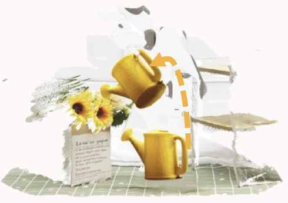
Publications
Full list of publications. For a curated selection of first-author works, see the homepage. Also available on Google Scholar.
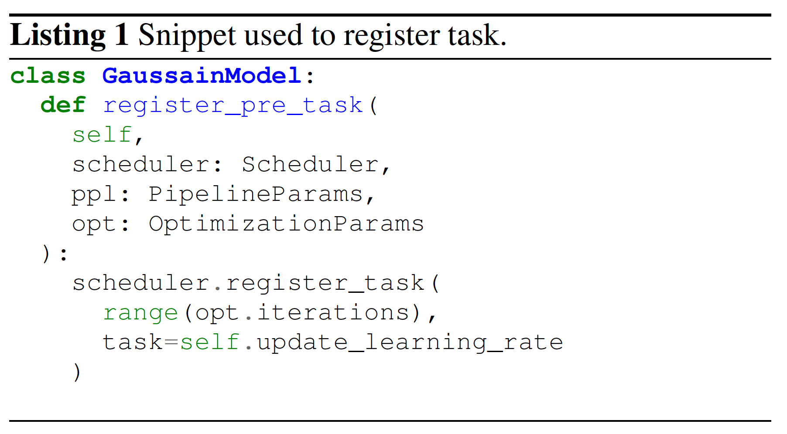
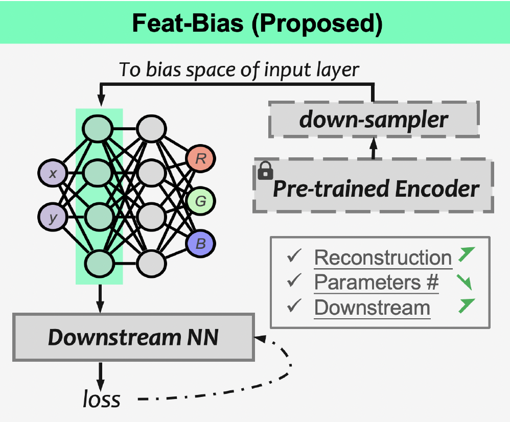
NeurIPS, 2025
Understanding Bias Terms in Neural Representation
Weixiang Zhang, Boxi Li, Shuzhao Xie, Chengwei Ren, Yuan Xue, Zhi Wang

ACM Multimedia, 2025
Best Paper Candidate · Top 0.5%
SizeGS: Size-aware Compression of 3D Gaussian Splatting via Mixed Integer Programming
Shuzhao Xie*, Jiahang Liu*, Weixiang Zhang, Shijia Ge, Sicheng Pan, Chen Tang, Yunpeng Bai, Cong Zhang, Xiaoyi Fan, Zhi Wang *Equal contribution
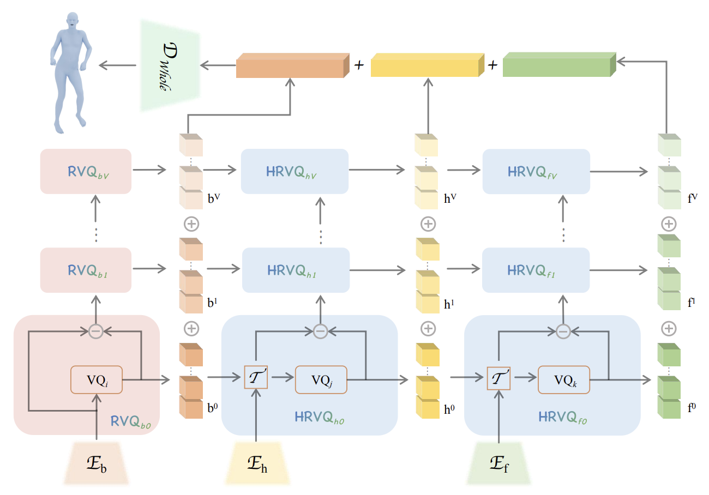
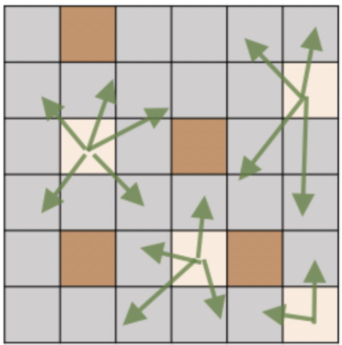
ICME, 2025
Expansive Supervision for Neural Radiance Field
Weixiang Zhang, Wei Yao, Shuzhao Xie, Shijia Ge, Chen Tang, Zhi Wang
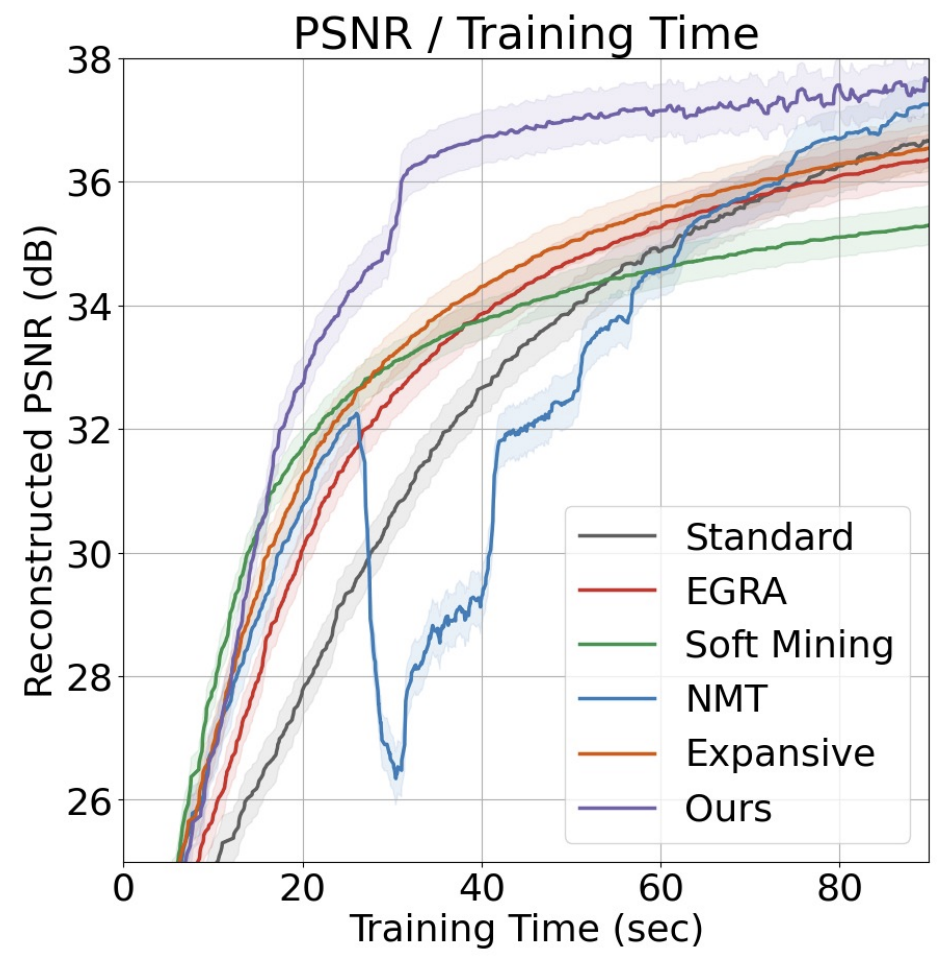

TVCG, 2025
TextIR: A Simple Framework for Text-based Editable Image Restoration
Yunpeng Bai, Cairong Wang, Shuzhao Xie, Chao Dong, Chun Yuan, Zhi Wang
An effective framework that allows the user to control the restoration process of degraded images with text descriptions, using the text-image feature compatibility of CLIP. Supports image inpainting, super-resolution, and colorization.
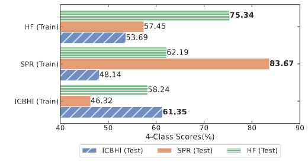
ICASSP, 2025
Lungmix: A Mixup-Based Strategy for Generalization in Respiratory Sound Classification
Shijia Ge, Weixiang Zhang, Shuzhao Xie, Baixu Yan, Zhi Wang
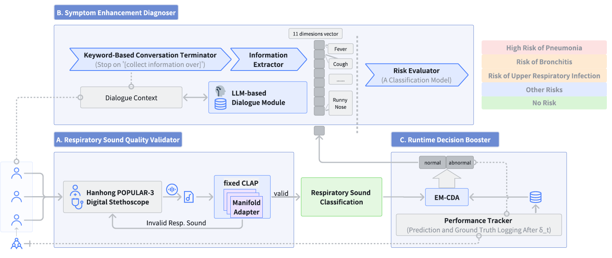
ICASSP, 2025
PulmoScan: A Practical Pulmonary Disease Pre-Screening System
Baixu Yan, Shijia Ge, Meizi Lu, Weixiang Zhang, Shuzhao Xie, Zhi Wang
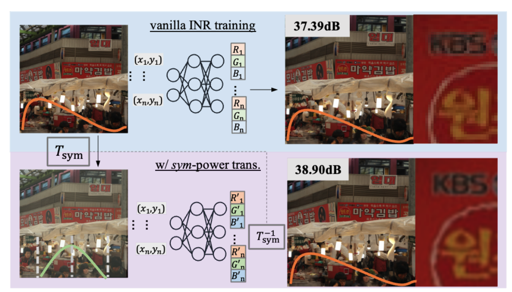
AAAI, 2025
Enhancing Implicit Neural Representations via Symmetric Power Transformation
Weixiang Zhang, Shuzhao Xie, Chengwei Ren, Shijia Ge, Mingzi Wang, Zhi Wang

ECCV, 2024
MesonGS: Post-training Compression of 3D Gaussians via Efficient Attribute Transformation
Shuzhao Xie, Weixiang Zhang, Chen Tang, Yunpeng Bai, Rongwei Lu, Shijia Ge, Zhi Wang


arXiv, 2024
Tuning-Free Visual Customization via View Iterative Self-Attention Control
Xiaojie Li, Chenghao Gu, Shuzhao Xie, Yunpeng Bai, Weixiang Zhang, Zhi Wang
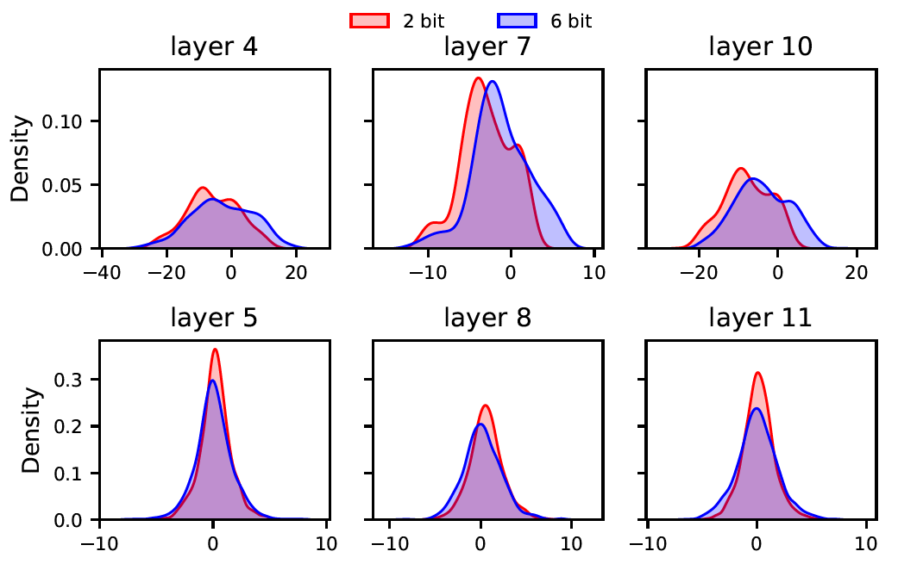
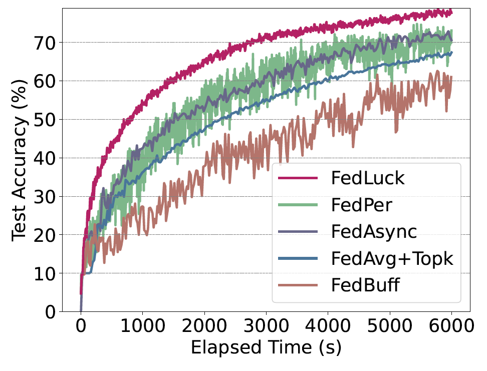

INFOCOM, 2022
Cost Effective MLaaS Federation: A Combinatorial Reinforcement Learning Approach
Shuzhao Xie, Yuan Xue, Yifei Zhu, Zhi Wang
As naively using multiple ML APIs can lead to lower analytical accuracy and poor user experience, we employ reinforcement learning to select the optimal combination of MLaaSes, thus maximizing accuracy while minimizing cost.